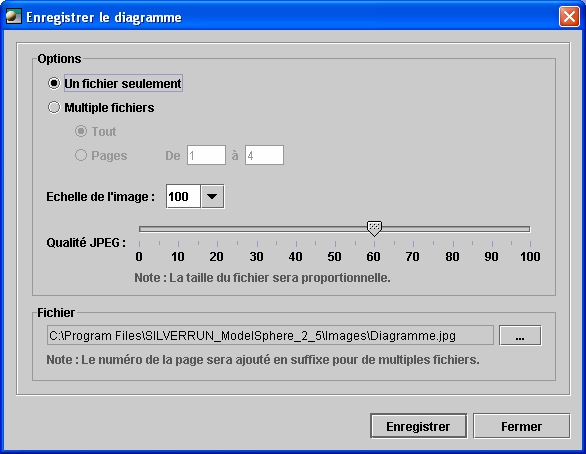

Générer le fichier d'image d'un diagramme
L’image du diagramme peut être utilisée à plusieurs escients (publication web ou l’inclusion
de diagrammes dans un document de traitement de texte ou présentation
PowerPoint, etc.) Ainsi, il est important de pouvoir imprimer l’image de votre diagramme
et également de sauvegarder l’image.
Les étapes à suivre sont très simples :
- Choisissez le diagramme.
- Du menu principal, choisissez Fichier > Enregistrer le diagramme en format image.
- Sélectionnez les options et configurations nécessaires.
- Cliquez sur Enregistrer.
Le fichier sauvegardé (l'image du diagramme) sera en format .jpg.
Vous pouvez aussi cliquez
avec le bouton droit sur le
Diagramme dans l'explorateur et du menu
contextuel choisissez Enregistrer
le diagramme en
format image.

Les options et configurations disponibles
Avant de sauvegarder la version JPEG de votre diagramme, vous devez tenir compte
de quelques options et configurations.
- Un seul fichier crée un fichier image (.jpg) contenant toutes les pages du diagramme.
Le nom du ficher sera formaté comme suit : [nom du diagramme] + ".jpg".
- Multiple fichiers crée un fichier image (.jpg) par page. Il est possible de choisir
la portée des pages qui seront sauvegardées en format image. Le nom du
fichier sera formaté comme suit : [nom du diagramme]+ "_" + [numéro de page] + ".jpg".
- Mise à l'échelle précise le facteur de mise à l'échelle pour l'image générée. L'échelle par défaut est 75%.
- Qualité JPEG précise la qualité du fichier image JPEG. La qualité JPEG par défaut est 60%.
- Fichier précise le repertoire où le fichier sera sauvegardé. Utilisez Parcourir pour y parvenir.